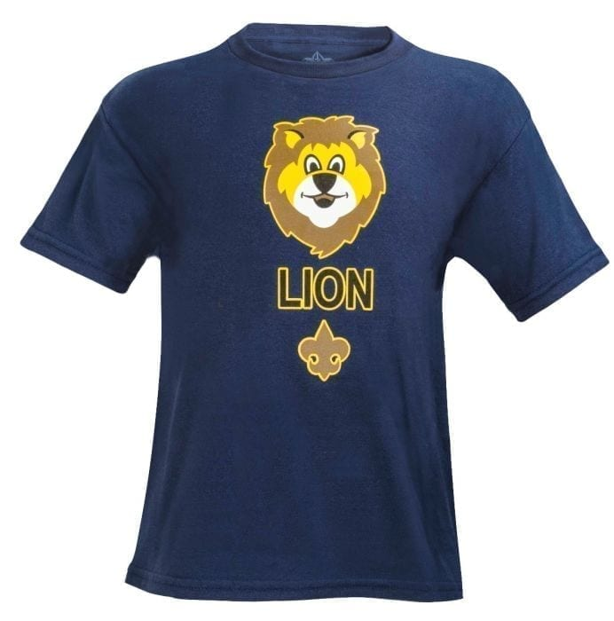
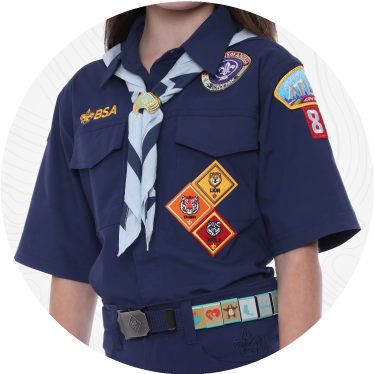
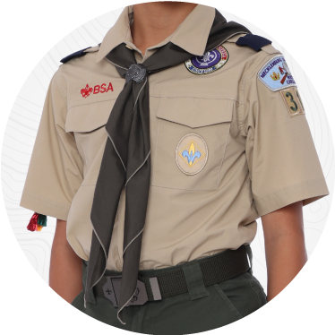
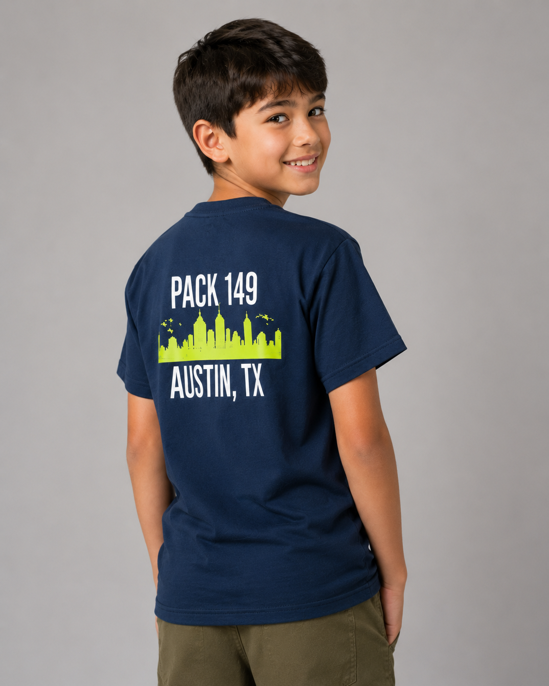

Everything you need to know about our pack and the Scouting America program.
Who We Are
Pack 149 has been part of the Spicewood Elementary community for over 40 years, making it one of the longest-running and most active Cub Scout packs in Northwest Austin. We are chartered by the Northwest Austin Rotary Club and operate within the Chisholm Trail District of the Capitol Area Council of Scouting America.
Our pack is large, welcoming, and driven by dedicated parent volunteers who believe in giving every scout a year full of memorable experiences. From campouts and Pinewood Derby to archery and the Blue & Gold Banquet, Pack 149 offers a full calendar of activities that the whole family can enjoy.
Pack meetings are held one Tuesday per month in the Spicewood Elementary cafeteria. Dens meet separately one to two times per month during the school year for rank-specific activities and advancement work.
Structure
Scouting America uses a straightforward structure that makes it easy for families to get involved and for scouts to feel a sense of belonging at every level.
The pack is the full group: all scouts, families, and leaders together. Pack 149 includes scouts from Kindergarten through 5th grade. The whole pack gathers monthly for pack meetings, which are larger community events where dens share what they've been working on and celebrate achievements together.
Within the pack, scouts are organized into smaller groups called dens, typically made up of six to eight scouts who are the same age and rank. A den is where scouts do most of their learning, earning adventures, and building friendships. Each den is led by volunteer Den Leaders, usually parents from that group.
Behind every great pack is a team of parent volunteers called the Pack Committee. The committee handles the administrative and planning side of things: organizing events, managing finances, coordinating with the council, and supporting den leaders so they can focus entirely on the scouts. If you want to be involved but prefer organizing over leading a den, the committee is a great fit.
Every Scouting America unit is sponsored by a chartered organization, a community group that partners with Scouting to serve local youth. Pack 149 is chartered by the Northwest Austin Rotary Club, which shares our values of community service and youth development.
Grades K–5
Cub Scouting is organized by grade level, so every scout is always with peers at the same stage of their journey. There are six ranks, one for each grade from Kindergarten through 5th grade. Scouts earn their rank each year by completing a set of required Adventures.
Kindergarten
Lion
1st Grade
Tiger
2nd Grade
Wolf
3rd Grade
Bear
4th Grade
Webelos
5th Grade
Arrow of Light
At the end of 5th grade, Arrow of Light scouts have the opportunity to cross over into a Scouts BSA Troop, continuing their Scouting journey through middle and high school. Pack 149 celebrates this milestone each January with a traditional crossover ceremony.
Learning & Growing
The Scouting America advancement program is built around Adventures: hands-on activities and challenges that scouts complete to earn their rank and grow their skills.
An Adventure is a themed set of activities that scouts complete together, usually over one or more den meetings. Adventures cover a wide range of topics: outdoor skills, science experiments, community service, personal fitness, and more. Each adventure is designed to be fun, age-appropriate, and genuinely meaningful.
Each rank has six required Adventures that every scout must complete, plus elective Adventures that scouts can choose based on their interests. The first required Adventure at every rank is Bobcat, which introduces scouts to the Scout Oath, Scout Law, and the basics of Scouting.
Once a scout has completed the required Adventures for their grade level, they earn their rank badge, worn with pride on their uniform. Ranks are recognized at pack meetings and celebrated at the Blue & Gold Banquet each spring.
What to Wear
Pack 149 is a "waist-up" uniform pack, meaning scouts wear their uniform shirt, neckerchief, and belt; any pants or shorts are fine.

Lion scouts do not yet wear the Class A uniform. Lions wear the Lion t-shirt, a navy blue shirt with the Lion cub logo specific to the Kindergarten rank. The Class A field uniform begins at Tiger in 1st grade.
The Class A (also called the Field Uniform) is the official Scouting America shirt worn to pack meetings, den meetings, ceremonies, and community events. The neckerchief, slide, and rank patches are all part of the Class A. There are two shirt variants depending on your scout's rank:

Blue Shirt
Tiger, Wolf, Bear & Webelos
Grades 1–4

Tan Shirt
Arrow of Light
Grade 5

The Class B is the Pack 149 navy t-shirt featuring the Austin skyline and "Pack 149 Austin, TX" graphic. Scouts wear it at campouts, hikes, and active events where the Class A isn't practical. Class B shirts are distributed at the start of the scouting year.
What We Do
Pack 149 runs a full program year packed with activities that scouts and families look forward to. Our annual calendar includes something for everyone: outdoor adventures, creative projects, community traditions, and celebrations.
Some of our signature events include the Pinewood Derby, Fall Campout at Camp Tahuaya, the Blue & Gold Banquet, Raingutter Regatta, archery, swimming at El Salido Pool, and the beloved Holiday Bazaar. Family members are always welcome. Scouting is a family program.
Our Promise
The Scout Oath and Scout Law are the heart of Scouting. Scouts recite them at every meeting as a reminder of the values they are working to live by, not just in Scouting, but in everyday life.
On my honor I will do my best
To do my duty to God and my country
and to obey the Scout Law;
To help other people at all times;
To keep myself physically strong,
mentally awake, and morally straight.
A Scout is:
The Cub Scout motto is simply: "Do Your Best." It's a powerful reminder that Scouting is about personal growth, not competition. Every scout's best looks different, and that's exactly the point.
Why It Matters
Scouting America's Cub Scout program has four core aims: the outcomes every activity and adventure is designed to develop in young people.
Scouts develop honesty, respect, and a strong moral compass through the Scout Oath, Scout Law, and the examples set by their leaders and peers.
Through service projects, flag ceremonies, and community involvement, scouts learn what it means to contribute to something bigger than themselves.
From hikes and swim days to the Fitness Challenge, scouts learn healthy habits and the value of staying active in fun, age-appropriate ways.
Scouts take on responsibilities within their dens and the pack, building confidence and learning to work as part of a team from an early age.
Families who stay in Scouting consistently point to the same benefits: their kids make lasting friendships, gain confidence, discover new interests, and develop a sense of responsibility that carries into school and beyond. And parents often say they get just as much out of it as their scouts do.
Get Involved
Pack 149 runs entirely on the energy and commitment of parent volunteers. There is no paid staff; every meeting, campout, and event happens because a parent stepped up. If your scout is in the pack, we'd love to have you involved.
No prior Scouting experience is required. Scouting America provides training for every role, and our experienced leaders are always ready to help new volunteers get started.
The Cubmaster leads the pack program and runs pack meetings. This is the most visible leadership role in the pack and works closely with all den leaders and the pack committee.
Den leaders guide a specific age group through their adventures and run den meetings. This is one of the most rewarding volunteer roles: you get to watch the same group of scouts grow over an entire year.
Committee members handle the behind-the-scenes work: event planning, finances, communications, and pack administration. Great for parents who want to contribute without leading a den directly.
Not ready for a standing role? Helping at a single event like the Pinewood Derby, a campout, or the Bobcat ceremony is always appreciated and a great way to get a feel for the pack before committing to more.
All adult volunteers must complete Youth Protection Training (YPT), a free online course from Scouting America that takes about 90 minutes. It is required before participating in any official Scouting activity.
Contact Us to Get Involved ›